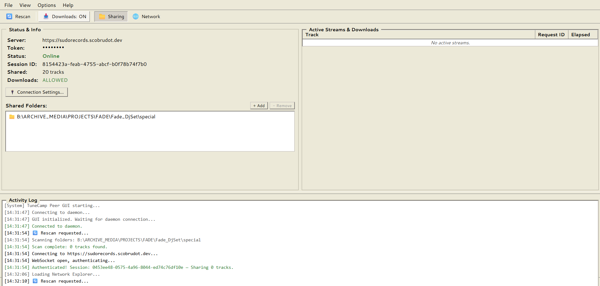

Share Your Music Library Instantly
Sidecamp is the ultimate standalone desktop companion app for TuneCamp. It lets you transiently share your local music folders with any TuneCamp instance in real-time, while securely handling all your P2P downloading (Soulseek, Torrent) right on your desktop, keeping the core server clean.
Modern Desktop GUI Dashboard
A sleek, low-overhead graphical client for easy library management and P2P downloading.

Sharing Dashboard: Monitor your server connection status, configure shared directories, and track active client streaming/download requests in real-time.
Key Features
Built for speed, convenience, and absolute user control.
Zero-Config Reverse Tunnel
Connects outward to the TuneCamp instance via secure WebSockets. Listeners can request streams or downloads, which are relayed down to the client dynamically. No routers to configure.
P2P File Acquisition
Directly download files via Soulseek, Torrents, or yt-dlp straight to your PC. Sidecamp orchestrates these downloads locally and automatically syncs them to your TuneCamp library.
Granular Download Permissions
Set permission policies. Allow other nodes to download original files, or restrict access to on-demand streaming only. Toggle permissions in real-time with a click.
Whitelabel Safety
By separating downloading mechanisms from the core instance, your primary TuneCamp server remains 100% compliant, hosting only catalog and legitimate streaming data.
Quick Start Guide
Download App
Get the latest Windows installer or clone the repository to build from source:
git clone https://github.com/scobru/sidecamp.git
cd sidecamp
npm install
npm run buildConfigure Credentials
Copy the environment variables template and configure your connection credentials and directories to share:
cp .env.example .env
# Open .env and fill in:
# TUNECAMP_SERVER=https://your-tunecamp-domain.com
# TUNECAMP_TOKEN=YOUR_JWT_OR_DEVELOPER_TOKEN
# TUNECAMP_SHARE=/path/to/my/music,/another/pathLaunch the App
Open Sidecamp, enter your TuneCamp Host URL and authentication token directly in the desktop app's Settings to connect securely to your instance.